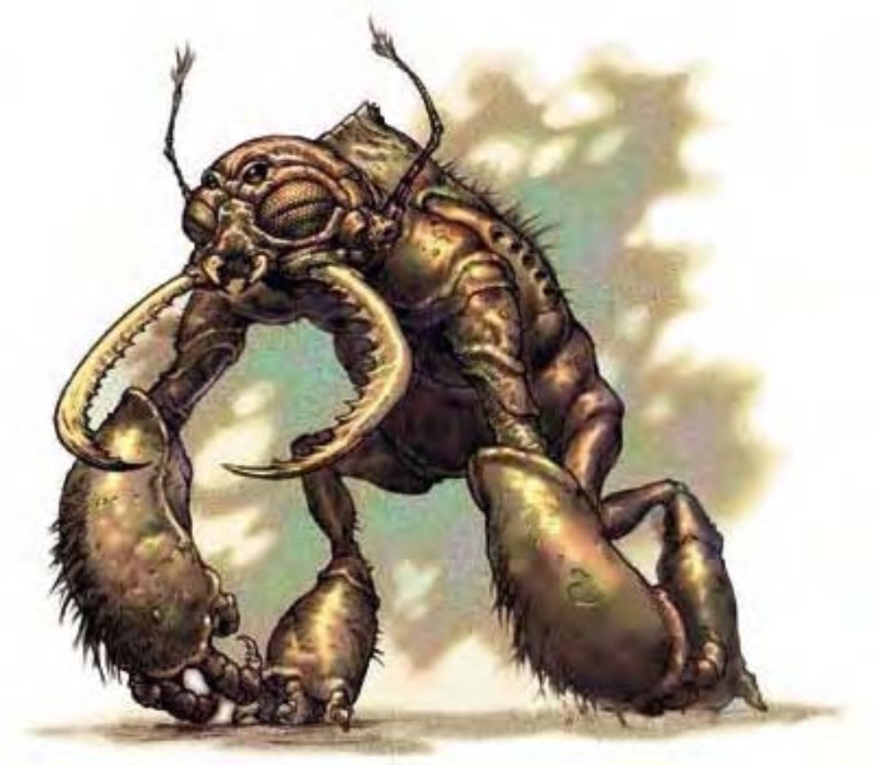

土巨怪的身躯非常高壮大，同时具有猿猴和昆虫特征，低垂的圆形头部下方有一对生满三角形锯齿的大颚，头部两侧各有一个类似昆虫的复眼，中间还夹着一对像猿猴的小眼睛。土巨怪全身都覆盖甲壳，部分壳上长着触毛，看来就像稀疏的毛发一样。
土巨怪是栖息在地底的巨大生物，强壮的双臂可以轻松挖开岩石，就像拔开树叶一样简单。他们会不断地四处破坏，所过之处满目疮痍。
土巨怪高约8英尺，宽可达5英尺，重约800磅。土巨怪遁地时可以穿过岩石，速度5英尺。除非刻意造路，否则遁地之后不会留下其他人可通行的隧道。
土巨怪通晓土族语。
| 资料栏位 | 土巨怪 (Umber Hulk) 大型异怪 |
| 生命骰 | 8d8+35 (71HP) |
| 先攻 | +1 |
| 速度 | 20英尺 (4格)、遁地20英尺 |
| 防御等级 | 18 (-1体型、+1敏捷、+8天生)、接触10、措手不及17 |
| 基本攻击/擒抱 | +6 / +16 |
| 攻击 | 爪抓+11近战 (2d6+6) |
| 全力攻击 | 2爪抓+11近战 (2d6+6) 及 啮咬+9近战 (2d8+3) |
| 占据/触及 | 10英尺 / 10英尺 |
| 特殊攻击 | 困惑凝视 |
| 特殊能力 | 黑暗视觉60英尺、颤动感知60英尺 |
| 豁免 | 强韧+8、反射+3、意志+6 |
| 属性 | 力量23、敏捷13、体质19、智力11、感知11、魅力13 |
| 技能 | 攀爬+12、跳跃+5、聆听+11 |
| 专长 | 强韧加强、多重攻击、健壮 |
| 环境 | 地底 |
| 组织 | 单独或聚集 (2-4) |
| 宝藏 | 标准 |
| 阵营 | 通常混乱邪恶 |
| 进化 | 9-12HD (大型)；13-24HD (超大型) |
| 等级修正值 | ― |
土巨怪强有力的攻击几乎可以打扁任何敌人，除此之外，大颚的力道也足以咬穿任何盔甲或外骨骼。
虽然体型看来笨重，土巨怪还是相当聪明。如果遇上光靠武力没法解决的敌人，他们也会善用天生的挖掘能力来制造坠落物或陷坑，出其不意地痛击那些低估他们智力的蠢蛋。
困惑凝视 (超自然)：效果与“困惑术”相同，范围30英尺，施法者等级8，意志过则无效 (DC=15)。豁免检定DC的调整值与魅力调整值相同。
有些土巨怪的体型和力量会成长到令人难以置信的程度。盖恐怖土巨怪的身高超过16英尺，重达8000磅。因为力量过于强大，盖恐怖土巨怪通常只能单独生活，连同类都惧怕它。盖恐怖土巨怪通常会被邪恶龙类或术士效命，守卫他们的巢穴。
因为生命骰和魅力值提高，对抗盖恐怖土巨怪的困惑凝视时的意志检定DC=22。
| 资料栏位 | 盖恐怖土巨怪 (Truly Horrid Umber Hulk) 超大型异怪 |
| 生命骰 | 20d8+180 (270HP) |
| 先攻 | +0 |
| 速度 | 20英尺 (4格)、遁地20英尺 |
| 防御等级 | 22 (-2体型、+14天生)、接触8、措手不及22 |
| 基本攻击/擒抱 | +15 / +36 |
| 攻击 | 爪抓+26近战 (3d6+13) |
| 全力攻击 | 2爪抓+26近战 (3d6+13) 及 啮咬+24近战 (4d6+6) |
| 占据/触及 | 15英尺 / 15英尺 |
| 特殊攻击 | 困惑凝视 |
| 特殊能力 | 黑暗视觉60英尺、颤动感知60英尺 |
| 豁免 | 强韧+17、反射+6、意志+15 |
| 属性 | 力量36、敏捷10、体质29、智力10、感知13、魅力15 |
| 技能 | 攀爬+23、跳跃+15、聆听+21、察言观色+5 |
| 专长 | 强韧加强、精通天生武器 (爪抓)、精通天生防具×3、钢铁意志、多重攻击 |
| 环境 | 地底 |
| 组织 | 单独 |
| 宝藏 | 标准 |
| 阵营 | 通常混乱邪恶 |
| 对比项 | 土巨怪 (大型) | 盖恐怖土巨怪 (超大型) |
|---|---|---|
| 生命骰 | 8d8+35 (71HP) | 20d8+180 (270HP) |
| 先攻 | +1 | +0 |
| 速度 | 20英尺 (4格)、遁地20英尺 | 20英尺 (4格)、遁地20英尺 |
| 防御等级 | 18 (-1体型、+1敏捷、+8天生)、接触10、措手不及17 | 22 (-2体型、+14天生)、接触8、措手不及22 |
| 基本攻击/擒抱 | +6 / +16 | +15 / +36 |
| 攻击 | 爪抓+11近战 (2d6+6) | 爪抓+26近战 (3d6+13) |
| 全力攻击 | 2爪抓+11近战 (2d6+6) & 啮咬+9近战 (2d8+3) | 2爪抓+26近战 (3d6+13) & 啮咬+24近战 (4d6+6) |
| 占据/触及 | 10英尺 / 10英尺 | 15英尺 / 15英尺 |
| 特殊攻击 | 困惑凝视 | 困惑凝视 |
| 特殊能力 | 黑暗视觉60英尺、颤动感知60英尺 | 黑暗视觉60英尺、颤动感知60英尺 |
| 豁免 | 强韧+8、反射+3、意志+6 | 强韧+17、反射+6、意志+15 |
| 属性 | 力量23、敏捷13、体质19、智力11、感知11、魅力13 | 力量36、敏捷10、体质29、智力10、感知13、魅力15 |
| 技能 | 攀爬+12、跳跃+5、聆听+11 | 攀爬+23、跳跃+15、聆听+21、察言观色+5 |
| 专长 | 强韧加强、多重攻击、健壮 | 强韧加强、精通天生武器 (爪抓)、精通天生防具×3、钢铁意志、多重攻击 |
| 挑战级数 | 7 | 14 |